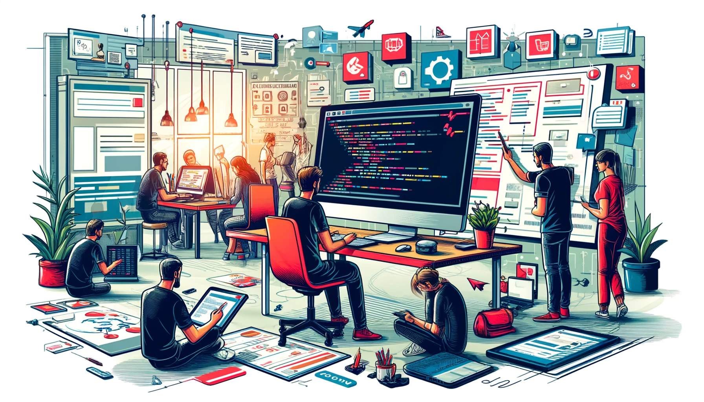
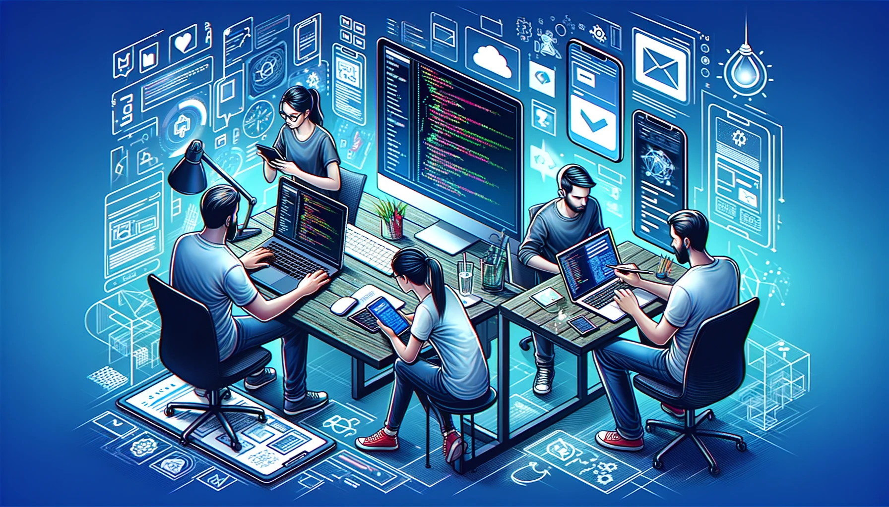

Agence de
développement
dématérialisé
Découvrez notre agence de développement web gérée par deux étudiants en informatique passionnés.
Nous concevons des sites web complets en respectant
les exigences du cahier des charges et des besoins clients.
Basés à Lyon et Dijon, nous pouvons travailler à distance
avec des clients partout en France.
Notre approche est flexible, motivée et créative, que ce soit
pour des sites web ou des applications mobiles.
NOS SERVICES
Vous imaginez, nous développons.
Développement web

Nous développons des sites web sur mesure pour
votre entreprise, que ce soit
pour une vitrine en ligne,
un site e-commerce
ou une plateforme complexe.
Notre priorité est d'assurer une expérience
utilisateur optimale.
Développement mobile

Nous concevons des applications mobiles intuitives
et performantes pour iOS et
Android, adaptées
à vos besoins spécifiques.
Notre objectif : offrir une expérience
utilisateur optimale sur tous les appareils mobiles.
Conseils & formations

En plus du développement, nous proposons
des
conseils et formations personnalisés
pour vous
aider à exploiter pleinement
le monde numérique
et former
votre équipe aux dernières tendances technologiques.
NOTRE SOLUTION EN 4 ETAPE
1. Cadrage du projet
La phase de cadrage est la première étape cruciale de notre processus
de développement informatique. Elle implique une rencontre initiale avec
le client pour analyser ses besoins et présenter notre solution personnalisée.
Cette rencontre vise à obtenir la validation du client,
assurant un démarrage solide du projet.

2. Conception du projet
La conception est une étape fondamentale de notre processus où nous
élaborons un devis détaillé, rédigeons un cahier des charges précis et
planifions une roadmap claire. Cette phase structure le projet pour
un développement efficace et conforme aux attentes du client.

3. Exécution
L'exécution est une phase clé de notre processus où nous réalisons
le design (UI/UX) de la solution, suivons avec le développement informatique
et concluons par la présentation du projet finalisé. Cette étape transforme les plans initiaux en une solution opérationnelle et visuellement attrayante.

4. Optimisation continue
L'optimisation continue est la dernière phase de notre processus,
où nous gérons l'hébergement, la maintenance, le débuggage et
les mises à jour de sécurité du projet. Cette étape assure la
performance et la sécurité durables de la solution déployée.